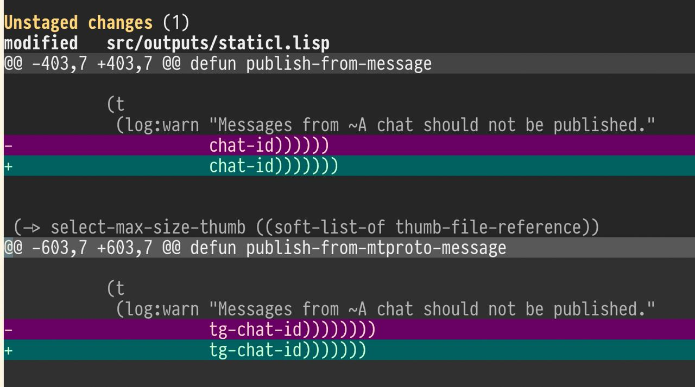

Posts with tag "llm"
Жизненные уроки
posted on 2026-04-18
Последнее время я вернулся к работе над своим проектом кодового ассистента. Идея в том, чтобы сделать такого ассистента, которого можно расширять и интерактивно отлаживать в процессе его работы. Конечно, я его делаю на CommonLisp, но многие вещи делаю с помощью другого кодового ассистента - OpenCode. Мой проект, кстати, называется Codabrus. Если интересно, подписывайтесь на обновление этого проекта на GitHub, ставьте ему звездочки, шерьте с друзьями.
Так вот, для разработки я сейчас использую OpenCode, и у него есть один инструмент, позволяющий сделать eval внутри работающего Lisp процесса. А в качестве модели я использую подписку на GLM 5.1. В целом, GLM неплохо справляется с разработкой на CommonLisp, лишь чуть хуже, чем Claude Sonnet, я бы сказал.
Единственное, с чем у него частенько возникают проблемы, это со скобками. Тут он часто косячит и потом не может правильно выставить скобки. Ну, есть и другие проблемки, которые там, тут, здесь всплывают. Но, что удивительно, есть один трюк, который почти все эти проблемы может полечить, если его планомерно использовать.
Этот трюк я подсмотрел на стриме у одного из коммон-лиспера - Николая Матюшева. Заключается трюк в том, что модель нужно научить учиться. Да, многие модели у себя в памяти как бы и так хранят какие-то знания о вашем проекте, окружении и прочем, но я предпочитаю сохранять знания явно.
Как это делается? Вы просто в промпте внутри файлика AGENT.md просите модель выписывать те важные уроки, которые она получила в ходе работы над каждой сессией. И модель выписывает эти уроки в файлик lessons-learned.md. Так, например, когда у меня случилась проблема с тем, что модель никак не могла расставить скобочки в коде, я попросил ее разобраться, в чем была проблема и придумать решение на будущее так, чтобы этой проблемы больше не возникало.
Модель проанализировала всю историю текущей сессии и выписала несколько важных пунктов. Таких, например, как она поняла, что если функция слишком большая и имеет большой уровень вложности, то модели сложнее правильно расставить скобки. И значит функцию надо делать короче и поменьше. Кроме того, она взяла и написала для себя кусочек кода, который позволяет ей валидировать открывающиеся и закрывающие скобки. Все это моделька сохранила в файлик lessons-learned.md. И после этого я не замечал, чтобы она зацикливалась, пытаясь правильно поставить скобки в коде.
Так что, приём очень полезный. Единственное, чего я опасаюсь, это того, что этот файлик lessons-learned будет разрастаться. Кроме того, не очень понятно, что делать с шерингом этих знаний, потому что многие лайфхаки, которые модель для себя выписывает, были бы полезны и в других проектах со схожим стэком. А значит, шерить знания как-то надо. Таскать из проектов проект файлики lessons-learned.md не очень хорошо, потому что тогда будет сложно эти знания обновлять.
И вот я думаю, что в своем кодовом ассистенте Codabrus я, наверное, придумаю какую-то структурную память, которая позволит шерить такие знания между проектами, над которыми работает кодовый ассистент. А может быть, даже и шерить их куда-то наружу в виде лайфхаков для других AI-ассистентов.
Как военные могут использовать LLM?
posted on 2026-03-04
По мотивам предыдущего поста про готовность OpenAI убивать людей за пределами США мне стало интересно в каких областях можно применять современный ИИ в войне. Вот с десяток идей который без проблем сгенерила наша отечественная Алиса.
*1. Анализ разведданных в реальном времени * LLM обрабатывают тонны информации: соцсети, новости, перехваченные сообщения, данные с дронов. Вытаскивают главное, строят хронологии и готовят сводки — вместо недель за часы.
*2. Динамические сценарии для учений * Больше никаких статичных планов. LLM генерируют тактику условного противника на лету: учитывают местность, погоду, ресурсы — тренировки становятся максимально реалистичными.
*3. Мгновенный перевод и анализ * Перехватили радиопереговоры? LLM переведёт, выделит ключевые данные (координаты, имена) и даже определит настроение говорящего — всё за секунды.
*4. Помощник командира * В бою каждая секунда на счету. LLM анализирует обстановку и предлагает варианты действий с прогнозом исхода, а ещё рассчитывает логистику: сколько нужно боеприпасов, топлива, медикаментов.
*5. Дезинформация и её обнаружение * LLM умеют и распространять фейки (для влияния на противника), и ловить их: ищут признаки пропаганды в потоках информации, выявляют скоординированные кампании.
- Автоматизация отчётности Донесения, рапорты, сводки — LLM составляют их по голосовой команде или коротким заметкам, проверяют на ошибки и сводят данные в единую базу. Солдаты тратят меньше времени на бумажки.
*7. Виртуальные инструкторы * LLM заменяют наставников: отвечают на вопросы по технике, уставам и тактике, проводят тесты, тренируют переговоры и допросы в симуляциях.
*8. Прогноз поломок техники * Датчики, журналы техобслуживания, отчёты механиков — LLM анализируют всё это и предсказывают, когда что‑то сломается. Можно починить заранее, а не в разгар операции.
*9. Управление дронами и роботами * Группы дронов или наземных роботов действуют слаженно: LLM координирует разведку, поиск целей, доставку грузов и адаптируется к изменениям без постоянного контроля оператора.
*10. Кибербезопасность * LLM сканируют сети на аномалии, выявляют попытки взлома, генерируют сложные шифры и тренируют специалистов через имитацию атак.
Довольно много всего, но почти везде у LLM лишь вспомогательная роль – координация или обработка информации.
В любом случае, надеюсь, вояки не читают мой блог, а то ещё возьмут что-нибудь из этого на вооружение :(
Как небольшой косяк LLM мне спать не давал
posted on 2026-02-25

На днях ввечеру буквально пару часов времени потерял на пустом месте, пытаясь отдебажить кейс, в котором у меня определение функции не появлялось в пакете после перекомпиляции приложения.
- Глазами вижу в файле определение функции. Оно есть.
- Компилирую её с помощью Ctlr-C Ctrl-C – она в пакете появляется.
- Перезапускаю REPL, делаю (asdf:load-system ... ) - функции в пакете нет. Как так???
При этом при загрузке модуля с помощью asdf:load-system компилятор выдает только одно предупреждение о том, что функция не определена, но она где-то используется.
В конце концов нашел проблему – иллюстрация на картинке выше. И эта проблема была принесена LLM.
В чем же было дело? Дело в том, что, внося очередные изменения, LLM у одного определения функции убрала закрывающую скобку, а у другого определения функции добавила лишнюю закрывающую скобку. В итоге весь код, который был между первым и вторым определением функции, оказался внутри тела первой функции.
Если коротко проиллюстрировать это, можно сделать это таким кодом:
(defun foo ()
(loop repeat 3
do (format t "Iterating"))
(defun blah ()
(format t "Blah called"))
(defun bar ()
(blah)))
На первый взгляд тут все ок. Проблема еще состоит в том, что настоящий LISPR скобки не считает. Мы судим о структуре кода по отступам, и здесь на первый взгляд все хорошо.
Проблема в глаза не бросается, потому что LLM не заботится о том, чтобы сохранять отступы так, как это делает нормальный LISP редактор.
Если отформатировать этот код в соответствии с правилами форматирования LISP, проблема станет очевидна. Вот во что он превратится:
(defun foo ()
(loop repeat 3
do (format t "Iterating"))
(defun blah ()
(format t "Blah called"))
(defun bar ()
(blah)))
Внезапно сразу оказывается, что определения функций blah и bar попали внутрь определения функции foo. И компилятору Common Lisp это нормально. Никаких ошибок он не выдаёт. Такие дела :(
Некоторое время назад один из коллег опубликовал свою поделку, которая...
posted on 2026-04-02
Некоторое время назад один из коллег опубликовал свою поделку, которая показывает, сколько осталось квоты на использование нейросетей. Она была написана на Python с отдельной библиотекой для встраивания в тулбар на OS X. Я подумал, что это хороший проектик, чтобы попробовать переписать его на Common Lisp с помощью нейросетей.
► Как нейросеть писала код
У меня были исходники коллеги на Python. Я дал LLM простой запрос — переписать программу на Common Lisp, используя существующие библиотеки, найденные через ql:system-apropos. В качестве ассистента использовал Claude Code + модель Opus 4.6.
Нейронка написала код. В процессе она даже нашла библиотеку для работы с Objective-C, потому что для отображения пунктов меню и иконки в macOS нужно использовать фреймворк на Objective-C. Нейронка оценила библиотеку, решила, что она недостаточно хороша, отказалась от неё и написала свою обёртку над Objective-C через CFFI.
► Отладка и запуск
Конечно, с первого раза программа не заработала. Я сделал несколько итераций. К сожалению, такие графические программы неудобно запускать через мой MCP-сервер для разработки на Common Lisp, потому что при неправильном создании биндингов программа крэшится и роняет вместе с собой весь MCP-сервер. Пришлось запускать программу вручную и скармливать тексты ошибок ассистенту.
После нескольких итераций ассистент допилил программу до состояния, когда она начала запускаться и работать достаточно стабильно. Теперь у меня есть полный аналог той программы, которую написал коллега, но на Common Lisp. Её очень удобно расширять, добавляя новый функционал прямо через REPL.
► Что дальше
Но интереснее другое. Раньше у меня была похожая программка для встраивания в тулбар macOS под названием Barista. Она была написана на LispWorks с его фреймворком CAPI. Там было ограничение: при распространении программы через компиляцию в LispWorks отключаются возможности компилятора, то есть нельзя подгружать динамические плагины.
Теперь я могу переписать Barista так, чтобы использовался SBCL, и там не будет таких ограничений. Программа станет полностью расширяемой с помощью Lisp-скриптов.
Портируем microGPT на Common Lisp с помощью LLM
posted on 2026-03-14
Смотрите чего я навайбкодил: https://github.com/40ants/microgpt
Это порт на Common Lisp скрипта microgpt, который недавно опубликовал Andrej Karpathy.
Эта штука включает в себя код трансформера и инференс. То есть она может обучиться на каких-то входных текстах, а потом генерировать похожие тексты. Всё как у больших LLM, только буквально в одном Python-скрипте. Ну и, конечно, эта штука больше создана для обучения, а не для того, чтобы показывать хорошую производительность.
В этом примере она учится на корпусе русских имен и может генерить новые, похожие по написанию:
% ./microgpt.py
num docs: 484
vocab size: 57
num params: 5152
step 1000 / 1000 | loss 2.3474
--- inference (new, hallucinated names) ---
sample 1: Небромир
sample 2: Миловета
sample 3: Милана
sample 4: Свеладр
sample 5: Милана
sample 6: Ратевоба
sample 7: Миловисла
sample 8: Крана
sample 9: Бородосл
./microgpt.py 54.06s user 0.82s system 99% cpu 55.011 total
Я подумал, что это хороший пример, чтобы попробовать, как LLM справится с переписыванием этого кода на Common Lisp.
Промпт для переписывания был очень простой. Буквально я сказал LLM: "Вот тебе код на Python, сделай мне то же самое, но на Common Lisp, для загрузки датасета используй либу Dexador". При этом я использовал в качестве агента Claude Code и нейросеть Claude Sonnet 4.6.
Что меня удивило - то что нейросеть сама создала ASDF систему, а так же решила декомпозировать код на модули, а не склеила всё в один большой скрипт.
Первоначальная версия которая получилась, работала аналогично питоновской, но в 5 раз быстрее:
% time roswell/microgpt.ros
num docs: 484
vocab size: 57
num params: 5152
step 1000 / 1000 | loss 1.9185
--- inference (new, hallucinated names) ---
sample 1: Велослав
sample 2: Бореслав
sample 3: Любра
sample 4: Влавослав
sample 5: Добран
sample 6: Любегост
sample 7: Светисл
sample 8: Вирослав
sample 9: Зослав
roswell/microgpt.ros 9.41s user 0.61s system 99% cpu 10.038 total
Дальше я просил LLM проанализировать что можно сделать чтобы повысить производительность и в итоге было сделано следующее:
*CLOS классы педеланы на структуры: * ```
roswell/microgpt.ros 6.00s user 0.47s system 99% cpu 6.489 total
То есть, после этого программа стала **быстрее python** оригинала **почти в 10 раз**.
А вот после объявления ftype и inline для некоторых функций, производительность улучшилась незначительно:
roswell/microgpt.ros 5.70s user 0.51s system 99% cpu 6.232 total
```
У меня не было цели упарываться в оптимизацию, но думаю можно выжать ещё больше скорости если захотеть. Основной темой эксперимеынта было - проверить, как LLM справится с подобным проектом. Ведь иногда так бывает, что для Common Lisp какой-то библиотеки нет, но она есть для другого языка. Переписывать вручную - занятие грустное, но если можно сделать это автоматически с помощью LLM и сэкономить себе много часов работы, то почему нет?
Свой Code Assistant
posted on 2025-07-20
Все выходные я провозился с созданием своего собственного Code Assistant. Очень интересно было разобраться в том, как вообще все это работает. К сожалению, статей именно про устройство кодовых ассистантов не так уж много.
В основном попадаются восторженные статьи про то, как круто работает вайб-кодинг, как с его помощью написали первый Hello World и тому подобное говно. Но мне повезло найти одну очень интересную статью, где автор анализирует работу IDE Cursor и устройство его промпта.
Я начал писать своего кода-ассистента, ориентируясь на исходники проекта Aider, но посматриваю и на другие проекты с открытым кодом, типа RooCode, Cline и прочих.
Сегодня случился замечательный момент — мой ассистент смог отредактировать файл. Он самостоятельно нашел место для правки, составил патч, наложил его с помощью инструментов и внес изменения. На демо прикрепленном к этому посту, видно, что сначала ассистент попытался найти упоминание функции по кодовой базе, затем прочитал часть найденного файла с помощью инструмента read_file, а затем сгенерировал и наложил на него патч.
Я изучил, как устроено редактирование файлов в Aider и Cursor. Там правки происходят через вызовы к LLM — формируется небольшой патч в кастомном формате, где указаны старые и новые исходники, затем эти инструкции скармливаются более быстрой LLM, которая уже и меняет исходник.
Я пошел другим путем — для редактирования использую CLI команду patch, научив LLM формировать правильный diff. Пока работает неидеально: иногда дифф получается некорректным, и команда патч ломается. Но если показать LLM ошибку, она делает следующую попытку с исправленным патчем. Обычно ко второй-третьей попытке всё получается.
Я планирую дальше развивать код-ассистент. Теперь нужно добавить цикл проверки изменений через тестирование.
Особенно интересно работать с таким проектом в Common Lisp — можно быстро экспериментировать: смотреть внутренний стейт, править функции, добавлять новые инструменты и сразу тестировать изменения. Такой режим работы очень удобен. Даже для интерфейса я пока использую CL REPL, но планирую добавить веб-интерфейс и может быть консольный, как у Aider. Пока, это площадка для экспериментов!
This blog covers commonlisp, llm, codabrus, learning, news, ai, automation, voice, projects, holism, zerocoder, python, codeassistant, aider, cursor, project, i18n, poftheday, closed, tips, seo, telegram, bot, прототип, smarthome, yandexcloud, logging, ideas, experiment, software, thoughts, programming, hackathon, mtstruetech, robotics, salebot, bots, notes, emacs, macos, lisp, failures, infrastructure, lispworks, life, идеи, mcp, problems, sql, nix, ultralisp, tutorials, yandex, cloud
Created with passion by 40Ants